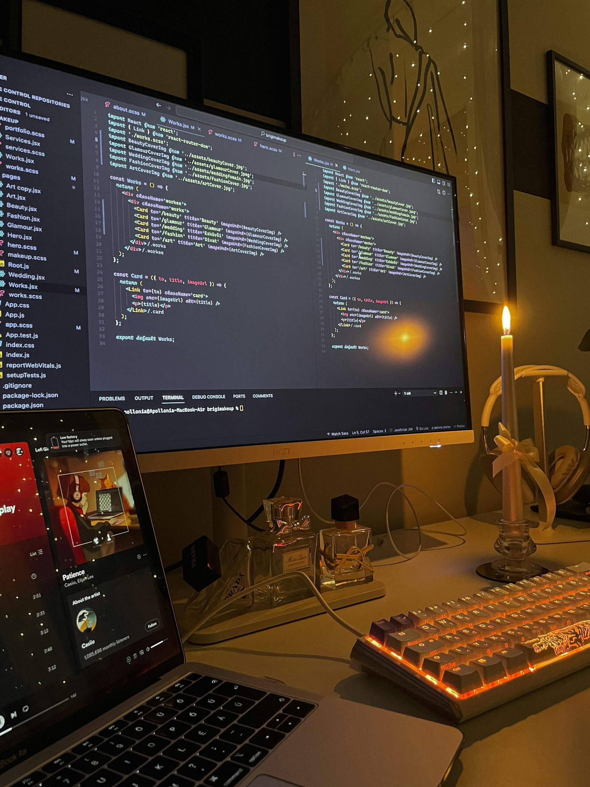

Agustín Godoy
Desarrollador Frontend en formación | Estudiante de Ingeniería en Informática
Esta es mi primera web
Este sitio fue diseñado para mostrar quién soy, qué estoy aprendiendo y cómo aplicar mis conocimientos a proyectos del mundo real. Navegando por las secciones, verás mis habilidades, mi formación académica, mis proyectos y todo lo que he construido mientras me desarrollo como Desarrollador Front-End. Mi objetivo es continuar creciendo, compartir mi progreso y forjar un camino en el mundo del desarrollo web.
Además de mostrar
mis conocimientos,
este
portafolio refleja mi compromiso con el aprendizaje constante y mi pasión por la tecnología. Cada
sección fue
diseñada para ser clara, funcional y moderna, tal como me gustaría trabajar en proyectos de la vida
real.
Espero que al navegar por este sitio web, comprendas mejor mi perfil, mis objetivos y todo lo que
tengo para ofrecer como desarrollador front-end. ¡Gracias por visitarme!
